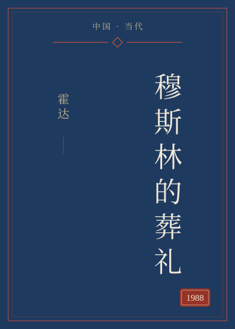
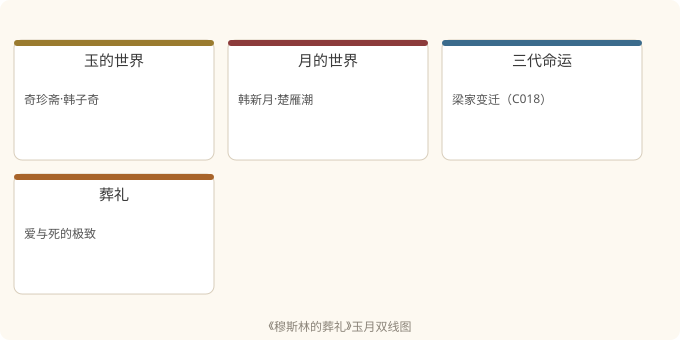

穆斯林的葬礼
一、基本信息
| 作者 | 霍达 |
|---|---|
| 成书/出版 | 1991年获第三届茅盾文学奖（中国作家网 C018）；1987年创作、1988年出版说（通说待核） 《穆斯林的葬礼》畅销 霍达：把爱和死写到极致（中国作家网）（官方文学机构） |
| 国别/地区 | 中国 |
| 时代 | 现当代 · 当代 |
| 体裁 | 长篇小说 |
| 语言 | 汉语（白话） |

《穆斯林的葬礼》玉月双线图（主题·结构图）
二、创作背景
中国作家网（C018）：以回族手工匠人梁亦清的玉器作坊奇珍斋升沉起伏为主线，描写梁家三代人不同的命运变迁。
双线结构：'一道门，隔着两个世界。一个是玉的世界，一个是月的世界'（C018）。
三、内容脉络
玉线：韩子奇的玉器人生与奇珍斋起落（C018 主线+通说）。
月线：韩新月的求学、爱情与早逝（通说待核）。
两线交织——两代人的悲欢离合（C018：两根故事线……交织重叠）。
四、主要人物表
| 人物 | 身份 | 说明 |
|---|---|---|
| 韩子奇 | 玉器大师 | 奇珍斋主（C018） |
| 梁亦清 | 回族匠人 | 玉器作坊创办者（C018） |
| 韩新月 | 学生 | 月线主人公（通说待核） |
| 楚雁潮 | 教师 | 新月之恋（通说待核） |
五、主题与艺术特点
- 玉（俗世）与月（信仰）的双世界（C018）。
- 爱情悲剧与宗教文化（通说）。
- 家族史诗：60年变迁（C018：写一个穆斯林家庭60年的变迁）。
六、影响与评论
- 中国作家网：1991年荣获第三届茅盾文学奖（与《平凡的世界》《少年天子》同届）。
《穆斯林的葬礼》畅销 霍达：把爱和死写到极致（中国作家网）（官方文学机构） - 冰心评：'现代中国百花齐放的文坛上的一朵异卉奇花，挺然独立'（C018）。
《穆斯林的葬礼》畅销 霍达：把爱和死写到极致（中国作家网）（官方文学机构） - 霍达自述：'当时只是想把爱和死写到极致，把这个活儿做绝'（C018）。
《穆斯林的葬礼》畅销 霍达：把爱和死写到极致（中国作家网）（官方文学机构）
七、阅读建议
难点
- 玉/月双线的切换——章序即线索标记。
- 伊斯兰文化与玉器行当的注释。
- 《穆斯林的葬礼》（北京十月文艺出版社，通说待核）。
可与《家》《平凡的世界》对照读：三种家族叙事。
八、待核实
- 1988年初版出版社（北京十月文艺出版社说）待核。
- 韩新月与楚雁潮情节细节核对。
- 销量300万册（2015年说）待核。
本页主要来源
霍达的其他收录作品：穆斯林的葬礼